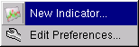
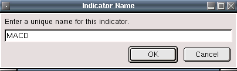

Create a new indicator for display.
Selecting New Indicator will bring up a dialog that asks you to choose from the list of installed indicator plugins. Only indicators that have been installed as plugins will be available.
The next dialog will ask you for a unique name for the new indicator.

After entering a name, the edit indicator dialog will be displayed. All of the parameters that apply to the indicator can be edited here. To change a setting, just click on the setting box and a dialog will pop up allowing you to edit the value.